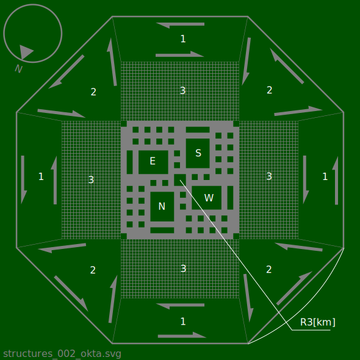
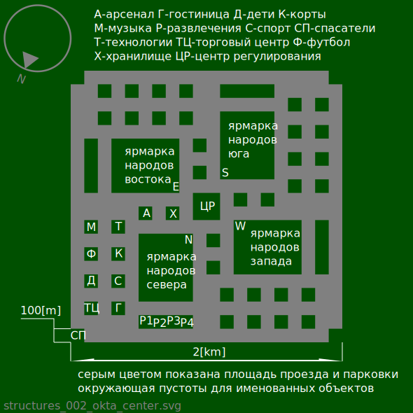
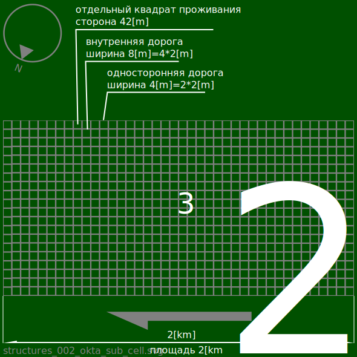
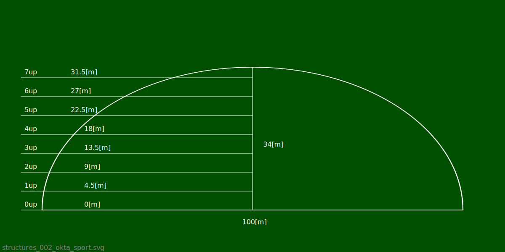
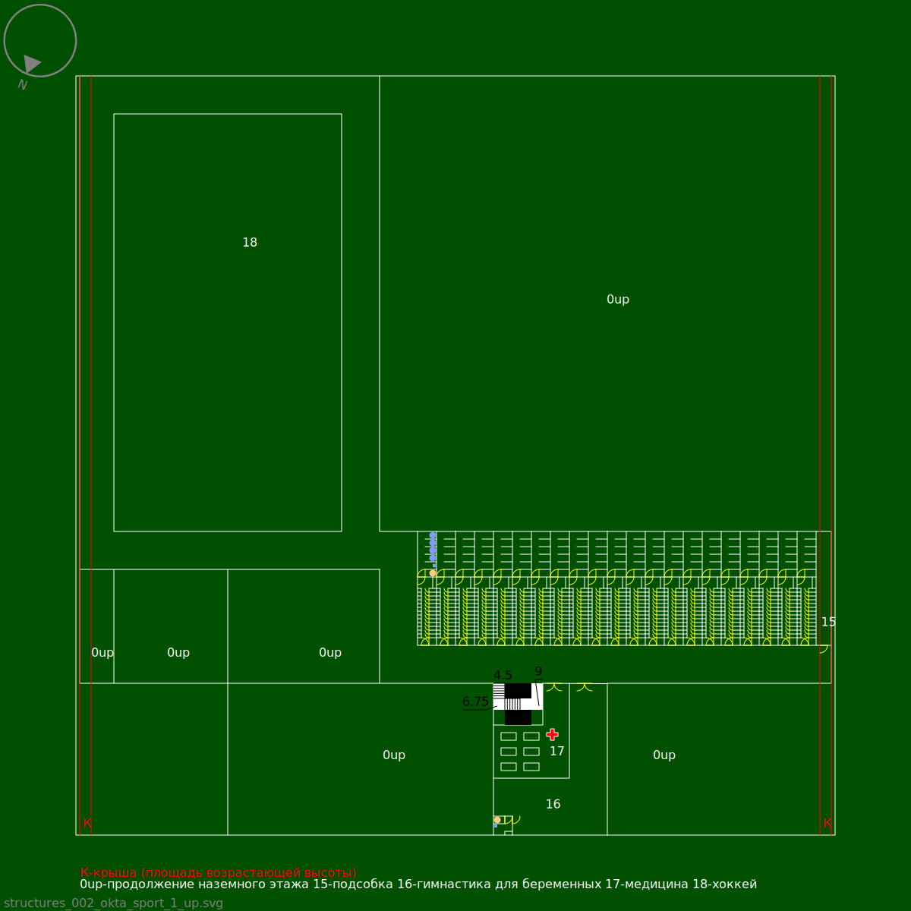
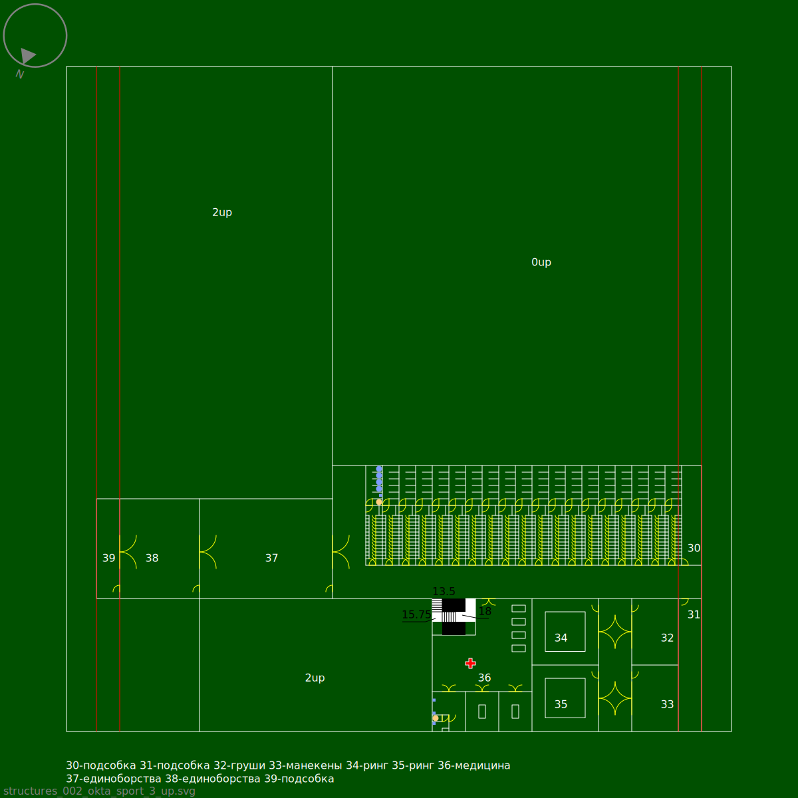
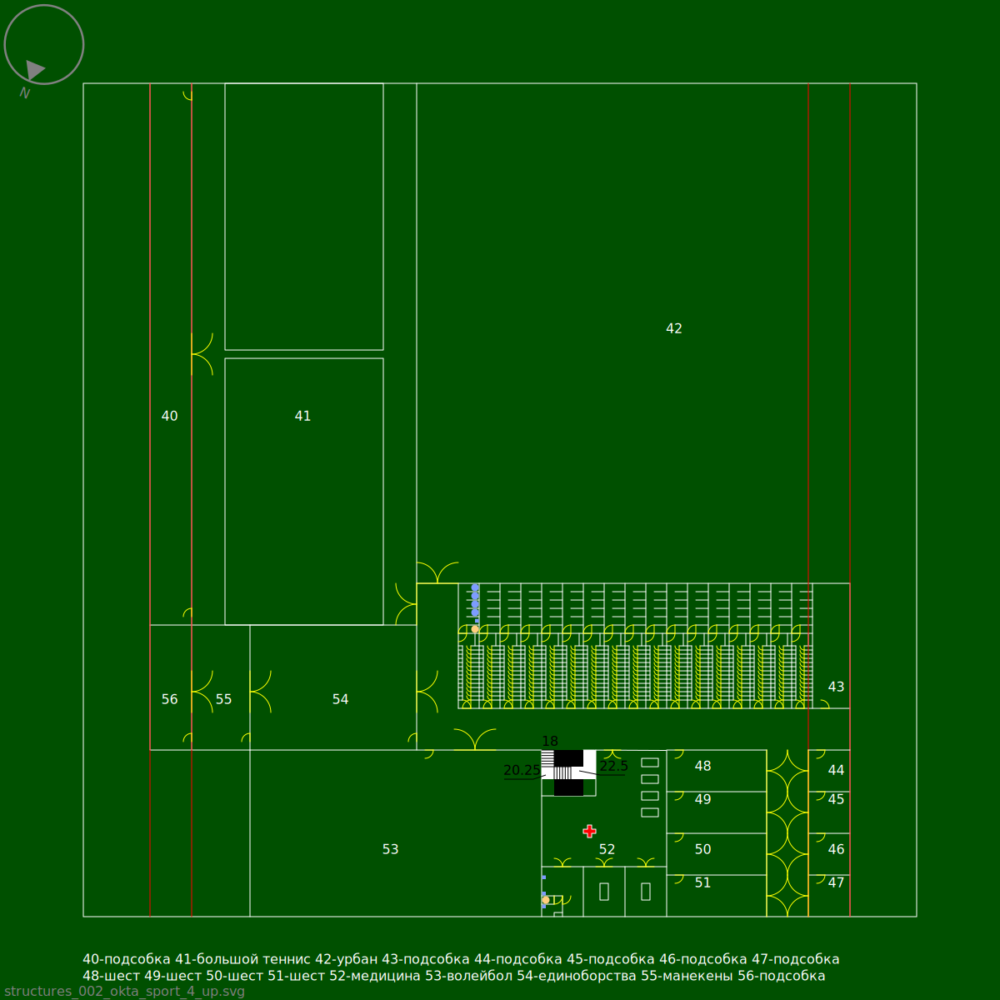
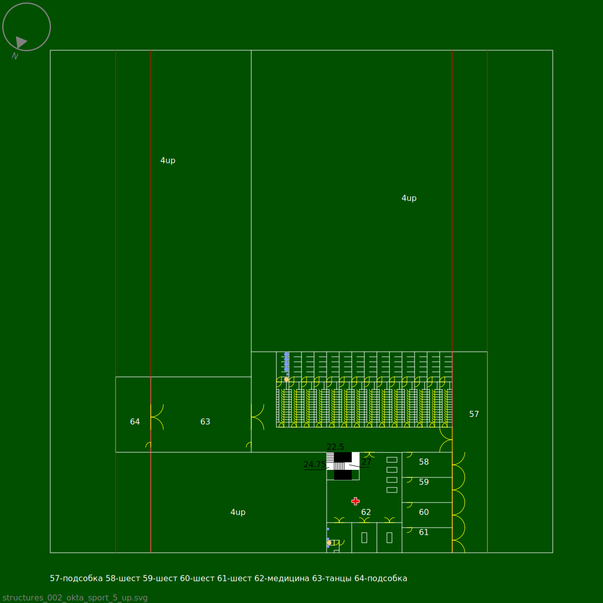
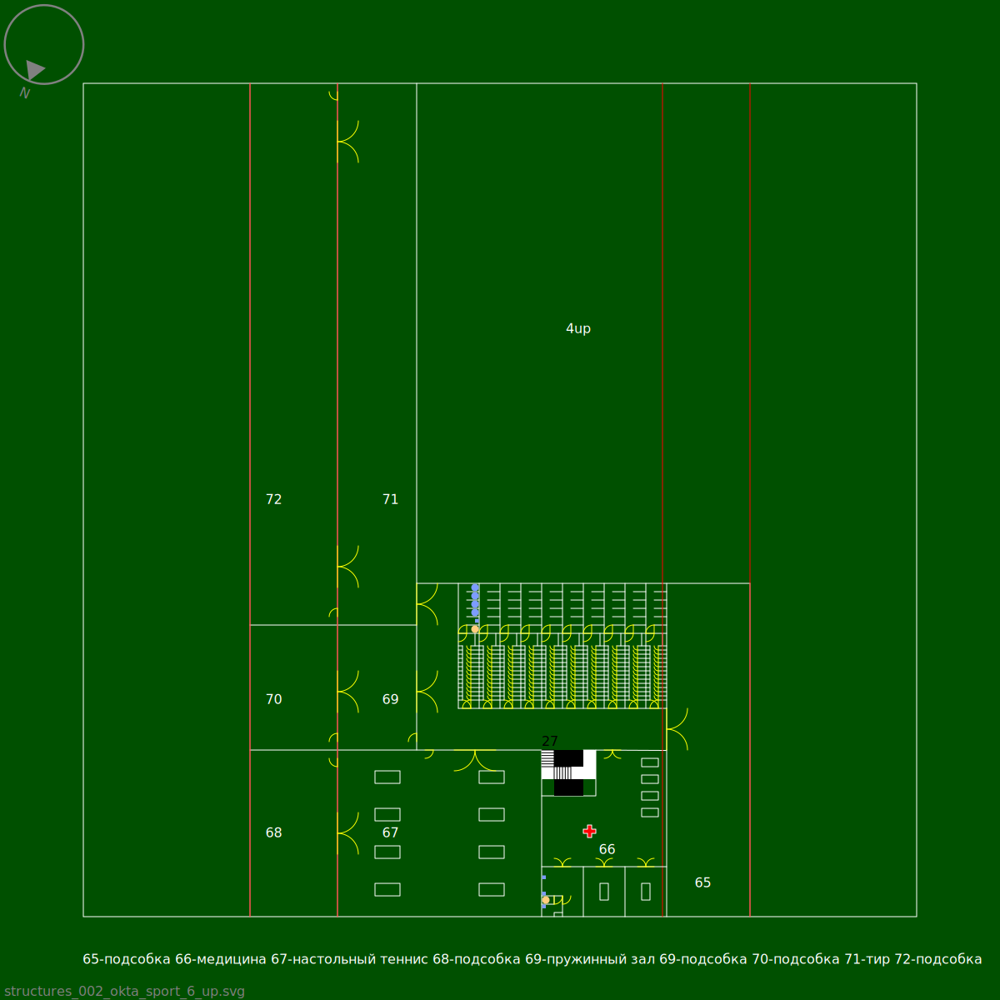
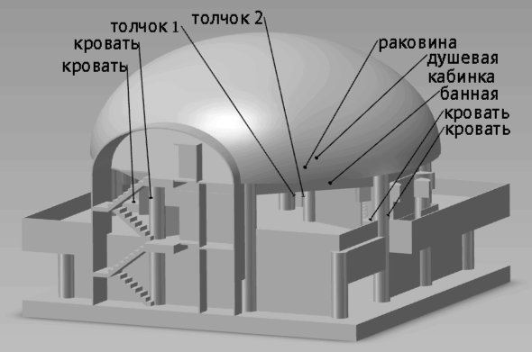

Для удобной связи между городами(при помощи прямолинейных дорог), можно проектировать города, похожие на правильный восьмиугольник.
Окта - город похожий на правильный восьмиугольник.

1 - промышленые склады, обслуживание автомобилей.
2 - производство и утилизация.
3 -
квадраты проживания.
Одностороняя восьмиугольная дорога, окружающая город, показаный на схеме выше, 17[m] в ширину. От каждой вершины восьмиугольника, в центр направлена одностороняя дорога, 4[m]=2*2[m] в ширину. Стрелки показывают разрешеное направление движения автомобилей. После въезда на восьмиугольную дорогу автомобиль обязательно проезжает минимум одну сторону восьмиугольника, перед выездом с восьмиугольной дороги.
Город содержит 3200=40*20*4 квадратов проживания.
Жилой дом спроектирован из расчета на 5 жителей. Город вмещает 16000=3200*5 жителей. Площадь города 25.456[km
2]=2*2
0.5*9[km
2]. Плотность заселения города 628[жителей/km
2]=16000/25.456 жителей на квадратный километр [km
2].
Разрешеная скорость движения внутри города от 0 до 6 [m/s]. Для движения автомобилей по внутреним дорогам города, одновремено открываются все паралельные внутрение дороги одного направления, затем открываются все паралельные внутрение дороги другого направления, для движения по очереди, с интервалом 180[s]. Окружные одностороние дороги всегда открыты для движения.
Центр города.

А - арсенал. Хранение и
изменение инструментов созданых для
вредоносных изменений. Сбор и предоставление,
полезной для
наблюдателя информации, о груповых физических
вредоносных изменениях.
Г - гостиница. Временое скромное место проживания. Отопление, канализация, электричество, приемлемая звукоизоляция.
Д - дети. Временое место возможного неопасного групового прибывания и развития детей, в комфортных условиях.
К - корты. Открытые площадки для занятия разными видами спортивных игр.
М - музыка. Хранение, демонстрация и
изменение инструментов созданых для
изменения звуков.
Р - развлечения. Р1 - аквариумы, музеи, выставки. Р2 - театры, концерты. Р3 - кинотеатры. Р4 - танцы, бильярд, азартные игры, бордели. Комнаты безопасного приобретения и приема, только в виде вдыхаемого дыма, вдыхаемого пара, выпиваемой жидкости, вдыхаемого порошка, химически активных веществ, под наблюдением ситера.
С - спорт.
Спортивный комплекс. Комфортные обслуживаемые площади, для занятия летними видами спортивных игр.
СП - спасатели. Медицина. Тушение пожаров. Спасательные работы. Ремонт и обслуживание города.
Т - технологии. Сбор, хранение и демонстрация
инструментов для создания и
изменения. Сбор и предоставление,
полезной для
наблюдателя информации, о способах создания и
изменения.
ТЦ - торговый центр. Продажа вещей, услуг, продуктов питания.
Ф - футбол. Открытое футбольное поле.
Х - хранилище. Хранение и обслуживание ценых ресурсов города.
ЦР - центр регулирования. Регулирование и планирование изменений в городе. Летопись. Крематорий. Электрический стул.
Ярмарка. Ручная работа на заказ. Свободная продажа вещей, услуг, продуктов питания, традиционых для культуры представленых народов.
На площади города разрешены разумные животные.
На площади города разрешены птицы, кроме
Падальщиков и
Воронов.
На площади города запрещены
Падальщики, ядовитые животные, животные весом больше 10 кг,
Псовые,
Вороны,
Копытные,
Грызуны.
На площади ярмарки и квадратов проживания разрешены животные при неопасном содержании.
Квадрат проживания, на площади которого есть животные огражден забором высотой от 3[m] до 7[m] включительно. Забор вокруг квадрата проживания прозрачный начиная с высоты 3[m] и выше. Прозрачная часть забора бесцветная. Высота забора должна быть достаточной для удержания животных, на площади квадрата проживания. Животные перевозятся в специальных достаточно прочных изолированых колесных тележках. Животные масой больше 10[kg] перевозятся в специальных достаточно прочных изолированых объемах автомобилей. Запрещено перевозить животных в условиях, когда есть возможность контакта посторонего проходящего, даже если проходящий провоцирует контакт с перевозимым животным.
Квадраты проживания.

Спортивный комплекс.

Вид спереди.
0up - поверхность пола нулевого этажа. Высота 0[m].
1up - поверхность пола первого этажа. Высота 4.5[m].
2up - поверхность пола второго этажа. Высота 9[m].
3up - поверхность пола третьего этажа. Высота 13.5[m].
4up - поверхность пола четвертого этажа. Высота 18[m].
5up - поверхность пола пятого этажа. Высота 22.5[m].
6up - поверхность пола шестого этажа. Высота 27[m].
7up - поверхность пола седьмого этажа. Высота 31.5[m].
Крыша повторяет элипс с полуосями 50[m] и 34[m].
Схемы этажей. В площади помещения горизонтальная длина указана первой. Во время обсчета площади проходов, при совпадении горизонтального и вертикального направлений, площадь совпадения переходит к горизонтальному направлению. Обсчет площади проходов проводится снизу в верх.
Этаж 0up.

1-лифт. Площадь 35.75[m
2]=6.5[m]*5.5[m]. Основной лифт площадью 7[m
2]=3.5[m]*2[m] предназначен для общего пользования. Дополнительный лифт предназначен для сложных ситуаций. Дополнительный лифт площадью 7[m
2]=3.5[m]*2[m] используется медецинскими работниками в рабочих целях.
Между лифтами проходит лестница общего пользования. Ширина лестницы 1.5[m]. Длина ступени лестницы 1/3 [m]. Высота ступени лестницы 1/4[m].
2-волейбол. Площадь 600[m
2]=30[m]*20[m] вмещает стандартное игровое поле с запасом площади вокруг игрового поля.
3-вахта. Площадь 19.25[m
2]=3.5[m]*5.5[m]. Распределение раздевалок между посетителями. Голосовое оповещение посетителей и персонала, через громкую связь.
4-персонал(ж). Площадь 62.5[m
2]=5[m]*12.5[m]. Помещение отдыха для подсобных работников женского пола.
5-персонал(м). Площадь 62.5[m
2]=5[m]*12.5[m]. Помещение отдыха для подсобных работников мужского пола.
6-пропуск. Площадь 12.5[m
2]=5[m]*2.5[m]. Запись на посещение. Выдача пропусков. Справочная информация.
7-баскетбол. Площадь 700[m
2]=35[m]*20[m] вмещает стандартное игровое поле с запасом площади вокруг игрового поля.
8-пища. Площадь 400[m
2]=20[m]*20[m]. Площадь для общественого питания посетителей. Полностью отделена - вход с улицы. Застраивается в несколько этажей высотой от 2.5 метров от пола до потолка на этаж, по отдельному проекту. Использует общее для комплекса или отдельное водоснабжение, вентиляцию, электричество.
9-электричество. Площадь 75[m
2]=5[m]*15[m]. Служебное помещение с ограниченым доступом работников. Размещение систем достаточных для полноценого электроснабжения комплекса.
10-климат. Площадь 225[m
2]=15[m]*15[m]. Служебное помещение с ограниченым доступом работников. Размещение систем достаточных для полноценого воздухообмена, подержания уровня влажности воздуха и температуры воздуха комплекса.
11-вода. Площадь 300[m
2]=20[m]*15[m]. Служебное помещение с ограниченым доступом работников. Размещение систем достаточных для полноценого водоснабжения комплекса.
12-раздевалки. Каждая раздевалка вмещает 13 посетителей. Раздевалка оборудована удобствами и содержит 1 большой шкаф 1[m]*1[m], 13 шкафов 0.5[m]*1[m], 13 сидений 0.5[m]*0.5[m], 1 умывальник, 1 толчок, 4 душа.
13-басейн. Площадь 3600[m
2]=60[m]*60[m]. Плавательная площадь разделена на две части. Первая часть - плавательная площадь постояной глубины. Площадь первой части 1250[m
2]=25[m]*50[m]. Вторая часть - нырятельная площадь и плавательная площадь ступенчатой изменяющейся глубины. Площадь второй части 750[m
2]=15[m]*50[m].
14-хокей. Площадь 1650[m
2]=30[m]*55[m] вмещает стандартное игровое поле.
Площадь раздевалок 0up 825[m
2]=22*2.5[m]*15[m].
Площадь проходов 0up 1457.5[m
2]=5[m]*2.5[m] + 5[m]*20[m] + 10[m]*2[m] + 60[m]*5[m] + 5[m]*15[m] + 5[m]*40[m] + 5[m]*55[m] + 5[m]*55[m] + 5[m]*40[m].
Этаж 1up.

0up-продолжение наземного этажа.
15-подсобка. Площадь 30[m
2]=2[m]*15[m].
16-гимнастика для беременых. Площадь 175[m
2]=15[m]*7.5[m] + 5[m]*12.5[m].
17-медицина. Площадь 89.25[m
2]=10[m]*7[m]+3.5[m]*5.5[m].
18-хокей. Площадь 1650[m
2]=30[m]*55[m] вмещает стандартное игровое поле.
К-крыша (площадь возрастающей высоты).
Площадь раздевалок 1up 787.5[m
2]=21*2.5[m]*15[m].
Площадь проходов 1up 1262.5[m
2]=59.5[m]*5[m] + 5[m]*15[m] + 39.5[m]*5[m] + 4.5[m]*55[m] + 4.5[m]*55[m] + 39.5[m]*5[m].
Этаж 2up.

19-подсобка. Площадь 45[m
2]=3[m]15*[m].
20-подсобка. Площадь 50[m
2]=2.5[m]*20[m].
21-растяжка(ж). Площадь 105[m
2]=10.5[m]*10[m].
22-йога(ж). Площадь 105[m
2]=10.5[m]*10[m].
23-фитнес(ж). Площадь 100[m
2]=10[m]*10[m].
24-аэробика(ж). Площадь 100[m
2]=10[m]*10[m].
25-настольный тенис. Площадь 258[m
2]=12.5[m]*2.5[m] + 15[m]*12[m] + 8.5[m]*5.5[m].
26-баскетбол. Площадь 700[m
2]=35[m]*20[m] вмещает стандартное игровое поле с запасом площади вокруг игрового поля.
27-пружиный зал. Площадь 300[m
2]=20[m]*15[m]. Тренажеры основаные на растягивании пружин. Травматичность у пружиных тренажеров меньше, чем травматичность у тренажеров с постояным сопротивлением от силы веса.
28-собственый вес. Площадь 262.5[m
2]=17.5[m]*15[m]. Опоры для тренировки тела собственым весом посетителя.
29-подсобка. Площадь 37.5[m
2]=2.5[m]*15[m].
30-бадминтон. Площадь 450[m
2]=4*7.5[m]*15[m] вмещает четыре стандартных игровых поля с запасом площади вокруг игрового поля.
31-минифутбол. Площадь 1100[m
2]=25[m]*44[m] вмещает стандартное большое игровое поле с запасом площади вокруг игрового поля.
32-подсобка. Площадь 162.5[m
2]=2.5[m]*65[m].
Площадь раздевалок 2up 750[m
2]=20*2.5[m]*15[m].
Площадь проходов 2up 1060[m
2]=45.5[m]*5[m] + 5[m]*15[m] + 35.5[m]*2[m] + 3[m]*15[m] + 2.5[m]*15[m] + 35.5[m]*2[m] + 5.5[m]*44[m] + 5[m]*44[m] + 35.5[m]*2[m].
Этаж 3up.

30-подсобка. Площадь 45[m
2]=3[m]*15[m].
31-подсобка. Площадь 70[m
2]=3.5[m]*20[m].
32-груши. Площадь 70[m
2]=7[m]*10[m]. Помещение с грушами для отработки ударов.
33-манекены. Площадь 70[m
2]=7[m]*10[m]. Помещение с манекенами для отработки техник нанесения вреда противнику.
34-ринг. Площадь 100[m
2]=10[m]*10[m] вмещает стандартный боксерский ринг 6[m]*6[m], с запасом площади вокруг ринга.
35-ринг. Площадь 100[m
2]=10[m]*10[m] вмещает стандартный боксерский ринг 6[m]*6[m], с запасом площади вокруг ринга.
36-медицина. Площадь 195.25[m
2]=3*5[m]*6[m] + 15[m]*8.5[m] + 8.5[m]*5.5[m]. Помещение медицинского назначения. Дополнительные умывальники. Комната отдыха медицинского персонала. Четыре кровати. Две операционые палаты, для обработки кровоточащих ран и первой помощи при сложных травмах.
37-единоборства. Площадь 300[m
2]=20[m]*15[m].
38-единоборства. Площадь 180[m
2]=12[m]*15[m].
39-подсобка. Площадь 52.5[m
2]=3.5[m]*15[m].
Площадь раздевалок 3up 712.5[m
2]=19*2.5[m]*15[m].
Площадь проходов 3up 352.5[m
2]=55.5[m]*5[m] + 5[m]*15[m].
Этаж 4up.

40-подсобка. Площадь 325[m
2]=5[m]*65[m].
41-большой тенис. Площадь 1216[m
2]=2*19[m]*32[m] вмещает 2 стандартных игровых поля с запасом площади вокруг игрового поля.
42-урбан. Площадь 3120[m
2]=52[m]*60[m]. Изменяемые постройки для городских видов спорта. BMX, ролердром, скейтборд, паркур, скалодром.
43-подсобка. Площадь 67.5[m
2]=4.5[m]*15[m].
44-подсобка. Площадь 25[m
2]=5[m]*5[m].
45-подсобка. Площадь 25[m
2]=5[m]*5[m].
46-подсобка. Площадь 25[m
2]=5[m]*5[m].
47-подсобка. Площадь 25[m
2]=5[m]*5[m].
48-шест. Площадь 60[m
2]=12[m]*5[m]. Комфортное и неопасное помещение оборудованое професиональными шестами для стриптиза.
49-шест. Площадь 60[m
2]=12[m]*5[m].
50-шест. Площадь 60[m
2]=12[m]*5[m].
51-шест. Площадь 60[m
2]=12[m]*5[m].
52-медицина. Площадь 195.25[m
2]=3*5[m]*6[m] + 15[m]*8.5[m] + 8.5[m]*5.5[m].
53-волейбол. Площадь 700[m
2]=35[m]*20[m] вмещает стандартное игровое поле с запасом площади вокруг игрового поля.
54-единоборства. Площадь 300[m
2]=20[m]*15[m].
55-манекены. Площадь 105[m
2]=7[m]*15[m].
56-подсобка. Площадь 75[m
2]=5[m]*15[m].
Площадь раздевалок 4up 637.5[m
2]=17*2.5[m]*15[m].
Площадь проходов 4up 974[m
2]=5[m]*20[m] + 52[m]*5[m] + 5[m]*15[m] + 2*4[m]*32[m] + 27[m]*1[m] + 2*4[m]*32[m].
Этаж 5up.

57-подсобка. Площадь 280[m
2]=7[m]*40[m].
58-шест. Площадь 50[m
2]=10[m]*5[m].
59-шест. Площадь 50[m
2]=10[m]*5[m].
60-шест. Площадь 50[m
2]=10[m]*5[m].
61-шест. Площадь 50[m
2]=10[m]*5[m].
62-медицина. Площадь 195.25[m
2]=3*5[m]*6[m] + 15[m]*8.5[m] + 8.5[m]*5.5[m].
63-танцы. Площадь 300[m
2]=20[m]*15[m].
64-подсобка. Площадь 105[m
2]=7[m]*15[m].
Площадь раздевалок 5up 525[m
2]=14*2.5[m]*15[m].
Площадь проходов 5up 275[m
2]=40[m]*5[m] + 5[m]*15[m].
Этаж 6up.

65-подсобка. Площадь 400[m
2]=10[m]*40[m].
66-медицина. Площадь 195.25[m
2]=3*5[m]*6[m] + 15[m]*8.5[m] + 8.5[m]*5.5[m].
67-настольный тенис. Площадь 490[m
2]=24.5[m]*20[m].
68-подсобка. Площадь 210[m
2]=10.5[m]*20[m].
69-пружиный зал. Площадь 142.5[m
2]=9.5[m]*15[m].
70-подсобка. Площадь 157.5[m
2]=10.5[m]*15[m].
71-тир. Площадь 617.5[m
2]=9.5[m]*65[m].
72-подсобка. Площадь 682.5[m
2]=10.5[m]*65[m].
Площадь раздевалок 6up 375[m
2]=10*2.5[m]*15[m].
Площадь проходов 6up 225[m
2]=30[m]*5[m] + 5[m]*15[m].
Площадь помещений спортивного комплекса 34992.75[m
2].
Площадь основных помещений спортивного комплекса 20090.75[m
2].
Площадь раздевалок спортивного комплекса 4612.5[m
2].
Площадь вспомогательных помещений спортивного комплекса 10289.5[m
2]=34992.75[m
2]-20090.75[m
2]-4612.5[m
2].
Жилой дом. Спроектирован из расчета на пять человек - двоих взрослых и троих подростающих. Сторона квадратного фундамента 22[m]. Высота потолка 3[m]. Высота этажа 4[m].

скачать 3D модель